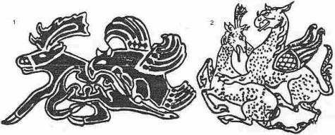

Kitabımıza bu bölümü koymakla, Oğuzlar hakkındaki bilgilerimize yeni bir renk vermek istedik. Hiç şüphe yoktur ki, filolojinin en güç dalı etimolojidir. Yalnız dil bilgisi değil; tarih ve kültür meselelerinde de derinleşmeği gerektiren bu tür araştırmalar, sonuç elde etme bakımından ilim adamlarını her zaman kesin olarak tatmin etmeyebilirler. "Türk Mitolojisi" gibi iddialı bir kitapta, bugünkü varlığımızın esasını teşkil eden yirmi dört Oğuz boyunun yalnızca boy adlarını yazmak yolu ile yetinmeği doğru bulmadık. Hele bazı meslektaşlarımızın, "Dodurga" gibi Oğuz boy adlarının, gerçek mahiyetlerinin anlaşılabilmesi için, eski Anadolu toponimisine veya Rumca’ ya başvurma gibi tavsiyelerde bulunmaları, artık bu konunun ele alınma zamanının gelmiş olduğunu bize hatırlattı. Yalnız şunu da söylemek istiyoruz ki bu araştırmamızda, eski Türk söz hazinesi ile Türk gramerinin bütün imkânları, örneklerle ve objektif olarak göz önünde bulundurulmuştur. Bazen de bir boy adının kök ve ekleri için bir kaç ihtimal gösterilerek, hatalarımızı azaltma yoluna gidilmiştir.
Yirmidört Oğuz boyunun adlarını ilk defa eleştiren yazarlardan, belki de birincisi, D’Ohsson* olmuştur. Bundan sonra, kendisi daha ziyade Moğol etnolojisi ve Çingiz Han'ın nesilleri üzerinde çalışan ve aynı zamanda Türkçe bilgisi de çok az olan F. von Erdmann, bir kaç defa bu konu üzerinde durmuş ve bir Mongolist olarak bazı sonuçlara varmak istemişti. Fakat Erdmann'ın fikirleri çok eskimiştir. Rus bilgini, Berezin, Reşideddin'in tarihini neşrederken, eskilere nazaran daha yeni bir hamle yapmış ve birçok yanlış yazılışları düzeltmiştir. Berezin'i H. Vambery takip etmiş ve Selçuknâme’lere dayanarak bazı yenilikler getirmişti. Anadolu Selçuklarına dair tarih metinleri neşreden Houtsma'da bu konuda bir deneme yapmış; fakat Houtsma'nın bu denemesi maalesef Berezin kadar başarılı olmamıştır. Reşideddin'in Hekaturov ve Smirnov tarafından yapılan yeni Rusça tercümelerinde ise, Ruslar tam bir başarısızlığa uğramışlar ve Berezin çağından çok daha geride kalmışlardı. Rus literatüründe Oğuz boylarının adlarını bir dereceye kadar, doğru yazabilen ilk yazar Kononov olmuştur. Kononov'un bu başarısı da, Türkiye'deki araştırmaları yakından takip etmiş olmasına bağlıdır. Türkiye'de bu konuda atılan ilk ciddî adımlar, her sahada olduğu gibi, yine Fuad Köprülü tarafından denenmiştir. Üstad Pelliot, bu meseleyi geliştirmiş ve ilmî bir yöne sokmuştu. En son olarak hayatını bu konuya büyük bir ciddiyet ve samimiyetle veren ve Oğuz boyları hakkındaki bilgimizi bugünkü ileri seviyeye getiren sayın Prof. Faruk Sümer'in adını da burada anmağı ihmal edilemez ilmî bir borç olarak görüyoruz.
* D'ohsson'un eski fikirleri için bk. Histoire des Mongoles, depuis Tchinghiskhan jusqu'à Timour Beg ou Tamerlane, La Haye-Amsterdam, 1834-1835, I, s. 423; F. von Erdman, Temudschin der Unerschütterliche, Leipzig, 1829, s, 503-504; Vollständige übersieht der ältesten türkischen, tatarischen und mongolischen Völkerschaften nach Raşid-ud-Din's Vorgange, Kazan, 1841, s. 19-22; Berezin, Sbornik letopisev, Tradi VAOIRAO, I, s. 32-38; H. Vambery, Das Türkenvolk, s. 4; Houtsma, WZDM, II, 1888, s. 221-26; Kononov, Rodoslovnaya Turkmen, Moskova-Leningrad, 1958, metin, s. 35-37. P. Pelliot, Etudes sur Phistoire de la Horde d'or, Paris, 1950.
Müşahedemize göre Oğuz boylarının adları, oldukça eski çağlarda meydana gelmişler ve zamanla bazı değişimlere uğramışlardı. Bu eskiliği bize gösteren en güzel delil, boyların adlarının ortaçağda bile çok az kullanılan ve adeta unutulmuş, ekler ve köklerle yapılmış olmasıdır. Bununla beraber Reşideddin ve diğer Türk kaynakları bu boy adlarının hangi anlamları ifade ettiklerini yazmaktan geri durmamışlardı. Şüphesiz ki bunların çoğu "Halk etimolojisi"dir. Fakat unutmayalım ki, halk etimolojisinin de ayrı değeri vardır. Bugün, köklerini, eklerini tanımadığımız, anlamlarını bugünkü zihniyetimizle çıkaramadığımız birçok sözleri, Reşideddin çağında anlayanlar ve bilenler vardı. Bugün bile Türkçeyi ve Türk gramerini, Kaşgarlı Mahmud kadar iyi anladığımızı iddia edemeyiz. Bu sebeple Reşideddin ve diğer Türk kaynaklarının, Oğuz boylarına ait adların hangi anlama geldiğine dair verdikleri bilgileri, ilmî önemi yoktur diye bir tarafa atamayız.
Bununla beraber, "Uygur" gibi bazı Türk kavim adları vardır ki, bunlar ta İsa’dan önceki asırlardan itibaren Çin kaynaklarında görülmeğe başlarlar. M.S. 14. asırda "Uygur" sözünü Türk grameri bakımından açıklama ve bu açıklamaya göre bir anlam verme, elbette ki ilmî bir değer taşımayabilir. Reşideddin'in istifade ettiği kaynaklar, Uygur sözünü "Uy-" fiil kökü ve "-gur" eki ile izah ederek, "uyan, tâbi olan" anlamını çıkarmışlardır. Bu, adi bir halk etimolojisi değildir. Bu açıklamayı, Türk gramerini iyi bilen bir kimse yapmıştır. Fakat Uygur sözü çok eskidir. Bunun için de, böyle bir anlama geleceği şüphelidir.
Hiç şüphe yok ki, Oğuz boylarının adlarından bazıları da çok eski çağların hatıralarıdır. İncelememizde bu yönü daima göz önünde tuttuk. Bunun yanında boy adlarına verilen anlamlara da önem vererek, o çağın anlayışını kavramağa çalıştık:
1. Kayı: Kaşgarlı Mahmud bu boy adını "Kayığ"540 , Reşideddin ise "Kayı" şeklinde yazar.541 Bu "Kayı" şeklindeki yazılış, bundan sonra devam edip gider. Şekil bakımından "Kay-", "kaymak, meyletmek" fiiline yakındır.542 Bundan yapılmış bir sıfat da vardır: Kayığyer, "sapa, yoldan kaymış, yoldan uzak yer" anlamına gelirdi.543
Bilindiği gibi Çingiz-Han'ın kabilesi Kıyan veya Kıyat (pl.) boyu idi. Reşideddin bu kabileden bahsederken şöyle der544: "Moğol dilinde "Kıyan", dağın tepesinden akan kuvvetli sele denir. Sert, çabuk, kuvvetli anlamına da gelir. "Kıyan-Bahadır" çok yiğit ve cesur bir kişi idi. Bu ad, yiğitliğinden dolayı ona verilmiştir. "Kıyat" sözü, "Kıyan"ın çoğuludur. Bu sebeple o soydan gelenlere ve onlara en yakın olanlara, eski çağlarda "Kıyat" denmişti".
Görülüyor ki Reşideddin'in istifade ettiği kaynaklar, Kıyan kabile adını Türkçe "Kay-mak" fiilinden getiriyorlar ve anlam bakımından da "dağlardan aşağıya kuvvetle akan sellere" benzetiyorlar. Sel ve Sel basması motifi Türk mitolojisinde çok önemlidir. Şato'larda ve Macarlardaki selle ilgili inanışları kendi bölümlerinde inceleyeceğiz. Selçuk sözünün de, "Sel-cik" den getirilmek istendiğini unutmamamız gerekir.
Reşideddin, "kuvvetli sel" anlamından ikinci ve üçüncü bir mana daha çıkarmakta ve Kıyan sözünün, "sert, kavî" ve dolayısiyle "yiğit, bahadır" anlamına kullanıldığını da söylemektedir. Aynı Reşideddin, Oğuzların birinci ve en önemli kabilesi olan Kayı'lar için de, Kayı, "muhkem" anlamınadır der.545 Görülüyor ki, hem Oğuzların ve hem de Moğolların en önemli kabilelerinin adlarında, mana bakımından bir birlik meydana getirilmiştir. Reşideddin'in Türkçe bilip bilmediğini bilmiyoruz. Bize göre bilmesi lâzımdı. Ayrıca Moğol imparatorunun hazinesinde saklı "Altın debter" onun eline verilmişti. Etrafında da pek çok Türk ve Moğol bilginleri vardı. Ayrıca kitabı da Moğol İmparatoruna sunulan bir tarihti. Çingiz Han'ın kabilesinin adını, - eğer Moğol hanedanı tarafından benimsenmişse - Türkçe ile izah etmek, mümkün olmasa gerektir.
Kıyan sözünün, Türkçe Kay-an ile ilgili olduğu biraz şüphelidir. Fakat Moğolcada böyle bir söz yoktur. Ebülgazi Bahadır Han da Reşi-deddin'in bu açıklamasını aynen almış546 ve Radlof da bu sözü Kiyan şeklinde Moğolca bir söz olarak kabul etmiş ve sözlüğüne koymuştur.547 P. Pelliot, haklı olarak Radlof'un böyle suni olarak Moğolca bir kelime yaratışını tenkit ediyor ve Osmanlıcadaki "Kay-an" sözünü niçin hatırlamadığını soruyor.548 Pelliot'nun görmemiş olmasına rağmen, gerçekten Ahmet Vefik Paşa, "Kayan", "dağlardan şiddetle inen muvakkat sel" diye, bir sözü meşhur sözlüğüne koymuştur.549 Ahmet Vefik Paşa Türk Şeceresini Türkçeye tercüme edenlerden biri idi. Bunu, Ebülgazi'nin tesiri altında yapıp yapmadığını bilmiyoruz. Fakat bu söz, Anadolu Türkçesinde de vardır. Ayrıca Orta Asya’da Kıy550 ve Kıyat adını551 taşıyan Türk kabilelerine de rastlamıyor değiliz.
Bu birinci ve en önemli ihtimal üzerinde durmayan Türk kaynakları daha ziyade Katığ, "katı"/Kadhığ (?)/Kayığ ilenmesi üzerinde duruyorlar. Kaşgarlı Mahmud, Kadhığ şeklinden hiç söz açmıyor. Uygurca da da Katığ'dır. Moğolcada Katan, "çelik" anlamına gelir.552 Bununla ilgili olarak yapılmış bir sıfat olan Katankui, "sert" sözü de Türkçe Katığ'la ilgili bir söz olsa gerektir.553 Moğolcada da " Kadh-" şekli pek görülmez.554
2. Bayat: P. Pelliot, ölümünden sonra yayınlanan eserlerinden birinde, bunu hemen kolaylıkla, Mog. Bayan/Bayat (pl.) ile birleştirmiştir.555 Hâlbuki yine ölümünden sonra basılan, daha önceki eserinde böyle dememektedir.556 Pelliot'nun sonraki eserlerindeki bu fikir ayrılığı, basımı kendisinin bizzat kontrol edememesinden ileri gelmiştir. Moğolların Gizli Tarihinde, Bait/Bayit adlı, Moğolistan’da Kobdo bölgesinde yaşayan bir Moğol kabilesinden bahsedilir.557 Sonraki tarihler ise aynı kabilenin adını Baya'ut (Bayağut) şeklinde yazarlar.558 Bundan da anlaşılıyor ki, Bayat kabile adının, Moğolca ilk söylenişi Bait\Bayit idi ve yine aslen Bayat sözünden geliyordu.559
Fakat meselenin önemli tarafı, en orijinal bir şekil olan Bayat sözünün ve hatta kabile adının Moğolcada görülmemiş olmasıdır. Bunu P. Pelliot'nun kendisi de bizzat söylemektedir.560
"Bayat" sözü Türkçede, yalnızca Oğuzların Bayat boyunun adında görülmüyor. Türkçede "Bayat", aynı zamanda "Tanrı" anlamınadır. Tanrı anlamına gelen "Bayat" sözü, nedense Kaşgarlı Mahmud'un kitabında ve Uygur metinlerinde görülmez. Daha ziyade Karahanlılar çağında ortaya çıkar.561 "Bayan", "zengin" sözü, Moğolcada ve eski Türk Unvanlarında vardır. Fakat eski Türkçede yoktur. Bunun yerine Türkler, "Bay", yani "zengin" sözünü kullanırlardı.562 "Bayı-", "Bayın-", "Bayu-", "Bayu-t-" fiilleri, hep hu kökten gelir.563 Bayar sözü de Türkçede bir memuriyet ve şeref ünvanı olarak kullanılırdı.564
Gramer bakımından görülen bu imkânlara rağmen, Bayat boy adının köklerinin ve oluşumunun çok eski çağlarda meydana gelmiş olması muhtemeldir. Yine bilindiği gibi Baya'ut (Bayağut) adlı bir Moğol kabilesi ile Bayawut adını taşıyan bir de Kıpçak boyu vardır. Marquart'a göre bu kabile, doğudan batıya göç ederek gelmiş bir Moğol kabilesi idi.565 İsim benzerliklerine bakarak böyle büyük nazariyeler ileri sürmek daima tehlikeli olmuştur. Marquart'ın bu nazariyesi lâyık olduğu cevabı bulmuştur. Burada bunlardan bahsedecek değiliz. Hârezm-Şah Tekeş'in hatunu Tergen veya Türgen Hatun bu boydan idi.566 Daha kuzeyde veya Kuzey-batıdaki Ulu-Berli Kıpçaklarından diğer bir Bayawut567 kabilesi daha var idi. Eski yazarların yaptığı gibi, Bayat'la Bayawut 'u birleştirmek ve aynı söz, aynı kabile imiş gibi bir kanaata kapılmak da doğru olamaz.568
Bayağut, "zengin, mal ve emlâk sahibi" anlamına, Uygurcada da vardır.569 Alpağut da, "Alp" sözünden yapılmış böyle bir sözdür. Bu da Türkçe bir sözdür.570 Bizce Türkçe ile Moğolcanın kökleri çok eski çağlarda bulunan müşterek bazı ekleri ve morfolojik benzerlikleri vardı ki, bu problemlerin hepsi oradan gelmektedir. Moğolcada bulunmayan Bayat boy adını, Moğolca ile nasıl izah edebiliriz?
3. Alka-evli: Bu boy adında anlaşılmayan kelime, baştaki alka sıfatıdır. Kaşgarlı Mahmud, bu kabileye Alka-Bölük der.571 Berezin ise bu boyun adını yanlış okumuştur.572 Bu boyun adını Kaşgarlı Mah-mud'un Alka-Bölük diye açık bir şekilde yazmış olması ve bu boydan sonra da Kara-Evli boyunun söylenmesi, bu konuda her türlü şüpheyi kaldırmış bulunmaktadır.
Yine mantıkla düşünecek olursak, "alka" ile "kara''nın karşıt, zıt anlamda iki kelime olduklarını kolaylıkla anlayabiliriz. Fakat "alka" sözünü günümüze kadar gelen sözlüklerden hiç birinde bulamıyor ve dolayısıyla de manasını anlayamıyoruz. Reşideddin, Alka-Evli sözünün, "nereye varırsa başarı gösterir" anlamına geldiğini söyle573. Fakat bu izah da, bize bir şey ifade etmekten uzaktır.
Biz burada alka kelimesini, bir fiil kökü olarak ve bir de renk sıfatı olarak inceleyeceğiz. Uygurlara ait hukukî metinlerde Alka şeklinde yazılmış bazı kişi adlarına rastlıyoruz.574 "Alka-" fiili Türkçede "hayır dua etmek"575 ve "alkışlamak"576 anlamına gelir. Türkçe alkış sözü de buradan gelir. "Alkamış" "takdis edilmiş" anlamına gelen kişi adlarına rastlamıyor değiliz.577 Bununla beraber şunu da itiraf etmek lazımdır ki, "alka-' fiil kökünün, yalnız başına isim olarak kullanıldığını gösteren bir örneğimiz de elimizde yoktur.
Türkçe ala, "alaca", öyle anlaşılıyor ki başlangıçla alak şeklinde idi.578 Alka sözünün, bilig > bilge’de olduğu gibi bir değişime uğramış olması da muhtemeldir.579 Bu duruma göre, Alka-Evli sözünün manası, "*Ala-Evli?" anlamına gelebilir. Böylece, "Ala-Evli" ile "Kara-Evli" arasındaki zıt anlam da ortaya çıkmış olur.
Değerli meslektaşım Prof. Faruk Sümer, "Alka-Evli"lere Anadolu’da, "Halka-Evli" dendiğini ve dolayısıyla bu iki söz arasında bir ilgi bulunup bulunmadığından haklı olarak şüphe ediyorlar.580 Düşüncemize göre bu, halk benzetmesinden ve alışkanlıktan başka bir şey olmasa gerektir. Esasen Türkçe olmayan "Halka" sözü, Uygur ve diğer doğu lehçelerinde de "Alka" şekline girmiştir.581 Türk içtimaî hayatında, renklere göre bir sosyal sınıflama yapıldığını bildiğimize göre, "Alka-Kara'' şeklinde zıt bir renklendirme ihtimali üzerinde ısrarla durmamız gerektiği kanaatındayız.
4. Yazır: Yazır boyunun adı hakkında, üstat P. Pelliot'nun kısa bir incelemesi vardır.582 Fakat biz burada, meseleyi gerek ele alış bakımından ve gerekse sonuç bakımından, bu büyük üstattan ayrılacağız.
"Yazır" boy adı, şimdiye kadar kök ve ek olarak "Yaz-ır" şeklinde ikiye bölünmüş ve gramer bakımından da, bu yolla açıklanmıştır. "-ır" eki bir (aorist) çekimdir. "Yaz-" kökünü, bazıları Türkçe "Yaz-mak", "yaymak"583, bazıları da "Yaz-", "başıboş dolaşmak"584 fiil kökleri ile izah etmişlerdir. P. Pelliot da, bu konu da "Yaz-mak" fiilini "yaymak" anlamına almış ve sonucuna bu yolla varmıştır. Ona göre, "Yaz-ır" bu fiilin, (Présent duratif veya participe aoriste) çekimidir.585
Nemeth de, bu sözü aynı çekim yolu ile "Yazar > Yaz-ar" okumuştu.586 Gerçekten de bu çekim yolu ile sözün böyle okunması lazımdır. Bize göre üstat Pelliot, Reşideddin'in "Yazır" boy adına verdiği manayı biraz değişik olarak tefsir etmiştir. Ona göre Reşideddin sözün manâsını, "Il étend (ses domaines)", yani "hükmünü yayan veya yayar" anlamına açıklamıştır. Hâlbuki Reşideddin, Yazır'ın manası, "Çok vilâyete, ülkeye hâkim" demektir, sözünü kullanmıştır.587 Üstat ise, bu açıklamaya "yaymak" fiilini katmak suretiyle tefsire gitmiştir.
Hâlbuki Kaşgarlı Mahmud, "Yazır" boy adını "Yazgır" şeklinde yazmıştır.588 Üstad Pelliot, Salgur boy adını incelerken "-gır, -gur" ekine önem vermiş ve bu yolla sonuca varmağa çalışmıştır.589 Bu örnek ortada iken, üstat nedense "Yazgır" şeklini, Kaşgarlı Mahmud'un bir yazış (orthographie) hatası olarak kabul etmiştir.
Bize göre "-gır, -gur" ekini daha derin olarak incelemek lazımdır. İsimlerin sonlarına gelen bu eki Prof. Bang incelemiştir. Yazır, Yazgır ise fiilden yapılan (deverbal) isimlerdir. Türkçede bu kaideyi uygulayan birçok örnekler vardır. Meselâ, "Kal-" fiilinden, "Kalgır" (Kırg.), "geriye kalan şey"590; "Öt-" fiilinden, "Ötkür" (Çağ.)591; "Tut-" fiilinden, "Tutkar" (Çağ.), "topluluk, kengeş, meşveret yeri, çokluk592"; "Çap-/Çab" fiilinden "Çapkur/Çapgur"(Çağ.)"fırtına, yağmur593"; "Tai-/Tay" fiilinden, "Taigur" (Çağ.), "çok kayan şey594", v. s. gibi.
"-gır-, -gur-" eki, fiillerin sonuna gelip fiil yapınca da (faktitif) hâli verir.595
Yukarıdaki kaidelerin ışığında, şimdi "Yazgır" sözünü inceleyelim: Yaz-gur- (Çağ.), "1. Birbirine bağlamak, 2. Günah işlemek ve işletmek"596 anlamına gelir. Elimizde örneği yoksa da, Yazgur şeklinde bir ismin de olması gereklidir. Nitekim "öt-kür-" (Çağ, Uyg.) şeklindeki bir fiilin yanında, "Ötkür" diye aynı anlamda bir isim daha vardır.597
"Yaz-'', "yaymak", "Yadh-/Yay-", "Yaz-/Yas-" söylenişleri de vardır.598 Fakat en şüpheli ve nazarî (hypothétique) şekli, "*Yaz-" şeklidir. Bizce Reşideddin'in, "çok ülkeye hâkim olan"; Ebülgazi Bahadır Han'ın ise, "iller akası, yani iller büyüğü" diye mana verdiği, Yazgır sözünü, başka bir fiil kökü ile izah etmek lâzımdır. Kaşgarlı Mahmud'a göre "Yas-" fiili, "dağıtıp yaymak ve çözmek" anlamına gelir.599 Buna göre, "*Yas-gır" şeklinde bir prototip düşünmek gereklidir.
"Yasa-" fiili ile "Yasa", "Yasak" sözleri Kaşgarlı Mahmud'un kitabında görülmüyor. Fakat bu fiil kökü, Göktürk ve Uygur çağında kullanılıyordu. Bizce Ebülgazi, "*Yas(a)-gır" şeklinden ilham alarak, "iller akası" manasını vermiş olabilir. Reşideddin’in verdiği mana da buna yakındır.
5. Döger: Bu boy adının söylenişi, Batı lehçelerinde Döger, eski Türkçede ve Doğu lehçelerinde ise Töker olmalıdır. Bu konuda çözülmesi en güç olan mesele, adın Döger mi; yoksa Düger mi olduğudur. Urfa bölgesindeki Türkmenler kendilerine Dügerlü adını vermektedirler.600 Brockelmann ve Besim Atalay, Kaşgarlı Mahmud'un kitabında kullandığı ses düzenine göre bu boy adını Tüger okumuşlardır.601 Bazı köy adları da Düğer şeklinde söylenirler.602 Döger veya Döğer (Döyer) şeklinde yer adları da yok değildir. Bu sebeple hem Düğer ve hem de Döger şekillerini incelemek lâzımdır.
Reşideddin, Döger' in kelime manasını, "bir yön üzerinde dönüp ve toplanan" anlamına izah etmiştir.603 Yazıcıoğlu ise, "yani derilmeg üçün bir yere geleler", şeklinde açıklamıştır.604 Ebülgazi yalnızca "tügerek", yani "yuvarlak, daire" diyerek, Döger'in kelime manasını vermiştir.605
Anadolu’da da "yuvarlak" anlamına düğer, düver kelimesi kullanılır. Tögerek/Tügerek (Kırım)606, Tögürök/Tügürük (Kırg.)607 sözleri de küçültme eki ile "yuvarlak" anlamına gelirdi. Daha Doğu Türk lehçelerinde Dügele - (Tar.) "yuvarlama, veya yumak yapma608", Dügelek (Tar.) ise, "yuvarlak, değirmi" anlamlarına geliyordu.609
Görülüyor ki, Reşideddin ve Ebülgazi'nin verdikleri anlamlar tamamıyla boş değildir. Boyun adının, "bir yere derlenen, toplanan ve oba kuran" şeklinde izah edilmesinin bir sebebi vardır.
Türkçede "Tök-mek" fiil kökünde ayrı bir kaç anlamı vardır. Birinci manası, "dökmek" tir.610 İkinci manası da birincinin genişlememesinden meydana gelmiştir. "Döküntü gibi açılmak, yayılmak" anlamınadır.611 Üçüncü manası ise "döğmek" anlamınadır.
Fakat Reşideddin ve diğer Türk kaynakları, daha ziyade "düğmek, düğümlemek ve bilhassa "toplanmak" anlamına gelen "Tüg-mek" fiiline önem vermişlerdir.612 "Yuvarlak, değirmi, yumak" gibi isim ve sıfatlar hep bu fiil köklerinden yapılmıştır. "Toplanmak, derlenmek" manasını taşıyan sözler de bu fiilden köklerini almıştır.613
Öyle anlaşılıyor ki, Döğer boy adının aslı başlangıçta Tüker/Tüger idi. Bundan sonra aynı boyun adı, Tüger/Töger/Döger ve hatta Döver şeklinde bile söylenmeğe başlanmıştı.
6. Dodurga: Anadolu'da Dodurğa, Doturğa, Todurğa, Doturğa, Toturğa614 şeklinde geçen bu boy adının etimolojisi üzerinde şimdiye kadar hiç kimse durmamıştır.
Reşideddin bu boy adının manasını, "ülke alan, kanun ve nizâm kuran" şeklinde izah eder.615 Ebülgazi Bahadır Han, "yurt almağı ve onu saklamağı bilen" demektir, diyor.616
Kaşgarlı Mahmud, "Tuturgu neng", "tutulması ve buyrulması gerekli olan şey" anlamına gelir diyor.617 Dodurga sözünü bu yolla açıklamaya doğru gidersek, bizce en emin yolu takip etmiş oluruz. "Tut-" fiil kökü ve "-ur-gu" ekleri ile "Tut-ur-gu" şeklinde meydana gelen bu söz, hâlen Anadolu’da "Dutarga" şeklinde kullanılmaktadır. Kaşgarlı Mahmud, "Tuturgu" sözünü verdiği yerde, Kasırku (Kasırga), Sakırgu (Sakırga), Kötürgü (Götürge) gibi değişimlere uğrayan sözleri de örnek olarak vermiştir. Sondaki "-gu/-ga" değişimi Türk dilinde olağan bir şeydir. Türkçe Kavurga sözü de, Tuturga’nın gramer bakımından paralel bir örneğidir.618
Ayrıca, tuturgu (Çağ.), "utanma, perde, hicâp619", tuturgu (Çağ.), tuturgan (Kom.), "pirinç" ve Tuturgan (Çağ.), "öldürücü zehir" anlamına gelen morfoloji bakımından benzer örnek sözler de vardır.620
Bizim düşüncemize göre Dodurga boy adı, başlangıçta *Tuturga şeklindeydi.
7. Yaparlı: Bu boy adının etimolojisi karanlıktır. Ebülgazi Bahadır Han, "neye değerse onu yakar" demektir diye, bir mana da veriyor. Fakat adı, "Yasır, Yasar, Yısar?" şeklinde yanlış yazıyor.621 Bu konuda şimdilik susmağı daha uygun buluyoruz.
8. Avşar: Reşideddin'e göre Avşar sözünün manası, "çevik ve vahşi hayvan avına hevesli" demektir.622 Ebülgazi Bahadır Han ise bu boy adını, "işini çabuk işleyen, yapan" anlamı ile izah etmektedir.623 Kaşgarlı Mahmud bu boy adını Afşar şeklinde yazar.624 Bu yazılış farkı, nihayet Batı ile Doğu lehçelerindeki yazış ve söyleyiş ayrılığından ileri gelir. Mesela Yabgu ünvanı, yine Kaşgarlı Mahmud tarafından Yafgu şeklinde yazılmıştır.625 Oğuzlar ise aynı ünvanı Yavku şeklinde yazarlar.
"Ava hevesli" anlamından hareket edersek, yine incelemeğe "Av" sözünden başlamamız en doğru yol olur. Kaşgarlı Mahmud, Aw/Au isminden iki türlü fiil yapmaktadır: Birincisi "Aw-, aw-dı, aw-ar, aw-ıp" gibi doğrudan doğruya isim kökünden yapılan fiillerdir.626 İkincisi "Aw-a-la-" gibi isimden ekle yapılan fiiller ve üçüncüsü de, bugün dahi kullandığımız, "Aw-la-, aw-la-l-, aw-la-n-, aw-la-ş-" gibi fiillerdir.627
Avşar boy adının tahlilinde bize yardımcı olacak örnekler, bugün artık Türkçede kullanılmayan birinci tip, yani doğrudan doğruya fiil kökü gibi çekime tabi tutulan, aw- fiilidir. Bu durumda, Afşar/Avşar/Awşar/Auşar sözünün aw-:/au- kökü ile "-ş-ar" eklerinden meydana gelmiş olması lâzımdır. "Aw-ş-ar" şeklinde morfolojik bir yapıya sahip olan bu fiilin zamanı da (réciproque présent durativ) dir.628
9. Kızık: Reşideddin'e göre bu boy adının manası, "kuvvetli ve yasakta ciddî", demektir.629 Ebülgazi Bahadır Han'a göre ise, "dirayetli, idarede bilgili" anlamına gelir.630
Bu boy adının, "Kıs-/Kız-" kökünden geldiği şüphesiz gibi görünüyor. Göktürk yazıtlarındaki şu cümle, "Kıs-" fiilinin en eski anlamını bize çok güzel açıklamaktadır:
(Türk Kağanı), "Törl bulunıg kısmış", yani Göktürk "Kağanı, dünyanın dört köşesinden milletlerin hepsini kendi hâkimiyeti ve töresi altına almış", demektir. Uygurcada ve Karahanlılarda da, töreye saygılı, disiplinli, ciddî halk için "Kısıglı" terimi kullanılırdı. Kudatku-bilig"'in şu parçası, bu konuda bize çok güzel bir fikir verebilir:
"İlig bolsa isiz, ajunug buzar,
"Kısıglısı631 bolmasa, yoldın azar"632
Yani : "Eğer Han kötü olsa, acunu bozar; halk da ciddî olmazsa, yolundan azar." "Kıs-mak" fiili, ailede de çocuğu disiplin ve terbiye düzeni içine sokmak anlamına gelir. Çocuğun terbiyesinden mesul olan baba için de "Kıstaçı" denirdi.633
Eski Türkçede "Kısık" (=Kıs-ık), "Hapishane" demektir.634 Bu fiil kökünden, "cezalandırma, yasama" anlamına gelen pek çok kelime vardır. Meselâ Kızgur- (Kız-gur-), "Cezalandırmak"635 Kızgut (Kız-gut) "ceza"636, Kızgutlan- (Kız-gut-lan-), "Ceza görüp, işten çekilme"637, Kıstur- (Kıs-tur-), "ceza verme, işkence"638.
Devlet işlerinde önemli ve ciddi görülen meseleler için de Kızık denirdi.639 Töre ve disiplin ifade eden bir sözdür. Bütün bu örnekler bize gösteriyor ki, Reşideddin ve diğer Türk kaynakları bu boy adını manalandırırken, boş bir kalk etimolojisi yapmamışlar ve sağlam bir esasa dayanmışlardı.
10. Beg-dili: Bu boy adının etimolojisi aşağı yukarı açıktır. Bu sebeple üzerinde durmayacağız.
11. Karkın: Reşideddin tarafından, "çok ve doyurucu aş" ve Ebülgazi’ ce de "aşlı" diye manalandırılan bu boy adı, maalesef çok karanlıktır.640
12. Bayındır: Kaşgarlı Mahmud bu boy adını Boyundur şeklinde yazmaktadır.641 Türk grameri bakımından bu sözü tahlil edecek olursak "Bay-un-dur", ek ve kökler bakımından "Çav-un-dur", "Çav-ul-dur" boy adına benzemektedir. Bayındır sözünün fiil kökü Kaşgarlı Mahmud’un kitabında, "Bayu-" şeklinde yazılmıştır.642 Bu sebeple o çağda bu Oğuz boyuna Bayundur denmesi normaldir. XIV. asırda, Abu Hayyan çağında ise bu fiil kökü "Bayı-" şeklinde söyleniyordu. Yine bu sebeple o çağda da Bayındır denmesini de normal görmemiz lazımdır.643 Öyle anlaşılıyor ki Doğu lehçelerin de Bayundur şeklinde söylenen bu boy adı, Batı lehçelerinde de "Bayı-" fiil kökü sebebiyle, Bayındır şeklinde söyleniyordu.
Bazı yazarlar Çağatayca’da Bayandur diye söylendiğini yazmışlarsa da644 bu, Moğolca ile benzeştirme gayretinden başka bir şey değildir. Çağatayca’da da Bayındır/Baindır şeklinde idi.645
Bu boy adının, eski Türkçede ve Moğolcadaki, "zengin" anlamına gelen Bayan sözü ile bir ilgisi yoktur. Bununla beraber Bayan sözü de sonradan Bayan/Bayın şeklinde, tıpkı Noyan/Noyın sözünde olduğu gibi bir değişikliğe uğramıştır.646
Bayındır sözü, "Bayı-" fiilinin "Bayı-n-", "zenginleşme", yani passiv (daha doğrusu reflechie) çekimi ile başlar ve sonuna "-dır" ekini alır. Asıl güçlük sondaki ekin açıklanmasındadır.
"-dır, -dur, -dar" şekillerinde görülen bu ek, Türkçede çok nadir olarak kullanılır. Bilindiği üzere kişi ve boy adları, çok eski çağların izlerini taşırlar. Bu sebeple günlük dilde kullanılmayan ve artık unutulmuş ekler ve kökler, çok eski çağlardan beri değişmeyen boy, kişi ve yer adlarında görülür.
Kanaatımızca Türkçe ve Moğolcadaki bu eklerden ilk defa üstat P. Pelliot söz açmıştır.647 Eski Türk ve Moğol ünvanlarından Baga unvanının diğer bir şekli olan Bagatur (Bahadır)'un sonundaki "-tur, -dır" ekinin de, Bayındır'ın sonundaki ekle aynı olması muhtemeldi. Moğol adlarından Yesüder, Negüder, Temüder kişi adlarında ve Mongoldur kabile adlarında da görülür.
Bizce bu ekin, Türkçedeki "-dır" eki ile yakından ilgili olması muhtemeldir. "-duruk" eki ise bunun küçültmesi olmalıdır.648
13. Beçene: Bu boy adı üzerinde pek çok inceleme vardır. Bu sebeple bu konu üzerinde bizim söyleyeceğimiz yeni bir şey yoktur.
14.Çavuldur: (Çawuldur) : Kaşgarlı Mahmud bu boy adını nasılsa "Çuvaldar" yazmıştır649. Bu boy adını da incelerken, bize göre Bayındır'da takip edilen yolu tekrarlamada fayda vardır kanaatındayız.650 Çaw sözü, eski Türkçede, "şan, şöhret" ve aynı zamanda "ses, ün" anlamına gelirdi. Bu isimden iki türlü isim yapıldığını görüyoruz. Bunlardan birincisi "çaw-la-n" formunda651 ve diğeri de652, "çaw-ış-" veya "çawı-k, çaw-ık" şeklindedir. Bu duruma göre fiil kökü olarak, "çaw" ve "çaw-ı-" halinde iki form görülmektedir. Çawuldur sözündeki fiil kökü de, Bayındır boy adındaki “bayı-/bay-ı-" gibi, "çawı/ çawı-" olmalıdır.
Bayındır sözündeki morfolojik yapıya paralel olarak, bu fiil kökünden de bir söz türettiğimiz takdirde, "çawındır/çawundur" şeklinde bir türeyiş ortaya çıkar. Nitekim bu şekle Anadolu'daki Osmanlı metinlerinde653 ve Orta Asya ile ilgili kaynaklarda da rastlamıyoruz değiliz.654
İkinci şekil de yine, Türk gramerine uygun olarak yapılmış bir türeyiştir. Bu da, "çawı-l-dur/çawu-l-dur'' dur. Sayın Prof. Faruk Sümer, bu ikinci şeklin bilhassa Anadolu köy adlarında çok görüldüğünü ifade etmektedir.655 Reşideddin656 ve Ebülgazi bu boyun adını ikinci şekli ile, yani " Çawuldur / Çawuldur " olarak yazarlar.657 Kaşgarlı Mahmud ise, bu boyun adını yanlış olarak Çuwaldar yazmıştır. Türk grameri bakımından Reşideddin'inki doğrudur.
Bu boy adının üçüncü bir yazılış şekli daha vardır. Yazılı kaynaklarda ve Orta Asya kabilelerinin adlarında rastlanan "Çawdur/Çavdur" şeklinin etimolojik izahı, gerçekten birçok güçlükler göstermektedir. Anadolu'da658 ve Ortaasya'da659 yer ve kabile adı olarak görülen Çavdur'un, Çavuldur boy adı ile ilgili olduğu hususunda hiç kimsenin bir şüphesi olmamıştır. Bununla beraber meseleyi güçleştiren bir nokta daha vardır. O da Çawdur/Çavdur sözünün Çağatay lehçesinde müstakil olarak bulunması ve kendine özel bir anlama sahip olmasıdır. Çavdur sözü için Şeyh Süleyman Efendi, bu sözün manası, "namus sahibi, şanlı" demektir, diyor.660 Bize göre çavdur sözü, Çawundur veya Çavuldur'un kısaltılmış şeklinden başka bir şey değildir. Bununla beraber Moğolca tesiriyle Çağatayca’ya girmiş bir söz de olabilir. Çünkü Moğolcada, "-dur, -dar" eki, Türkçeye nazaran isimlerin sonuna daha çok gelmektedir.
Çawuldur boy adının sonundaki "-dur" eki, "Bayındır" veya "Bayundur" daki "-dır, -dur" eki ile aynıdır. Bu ek üzerinde, Bayındır boyu ile ilgili bölümümüzde daha fazla bilgi vermiştik.
Çawuldur/Çavuldur sözünün anlamını Reşideddin, "ünlü, şerefli, ünü yaygın661"; Ebülgazi ise "namuslu" sözleri ile karşılarlar.662
15. Çepni: Bu boy adını Kaşgarlı Mahmud, Çepni663 ve diğer bazı kaynaklar da cepni veya cebni şeklinde yazarlar. Bu da, etimolojisi çok karanlık boy adlarından biridir. Bu boy adına Reşideddin, "düşman gördüğünde hemen savaşır"; Ebülgazi ise "bahadır" şeklinde mana vermişlerdir. Düşüncemize göre verilen bu anlamların, boy adının esas kökü ve etimolojisi ile ilgisi yoktur.
Öyle anlaşılıyor ki, gerek Reşideddin ve gerekse Ebülgazi, aslen Moğolcadan Türkçeye girmiş olan "cebe" sözüne bakarak, Çepni boy adını manalandırma yoluna gitmişlerdir. Çingiz-Han çağında bile Türkler, meşhur Moğol generali Cebe'nin adını bu şekilde söylememişler ve Moğolca Cebe'nin karşılığı olan Türkçe Yeme sözünü kullanmışlardı. Cebe sözünü, Çingiz Han çağından önce yazılmış Türkçe sözlüklerde de görmüyoruz. Harezmşahlar çağında Türkçe eklerle yapılmış cebelikler gibi sözler varsa da664; yine aynı sözlükte Moğ. cebe sözü, Türkçe sağıt sözü ile karşılanmıştır.665 Yukarıda da söylediğimiz gibi, Türklerin General Cebe''ye, Cebe dememelerinin de bir sebebi vardı.666 Çingiz Han'ın ikinci oğlu Cöçi’ye de Türkler Cöçi dememişler ve bu kelimenin Türkçedeki karşılığı olan Tüşi sözünü ona ad olarak kullanmışlardı.
Çepni boy adının Reşideddin tarafından yapılan etimolojik izahı, bir halk etimolojisidir. Şunu da unutmamalıyız ki, halk da sözleri manalandırırken, kendi çağlarındaki köklere, eklere veya bize kadar gelmemiş, kaybolmuş sözlere bakarak bu manayı veriyordu. Bir gerçek varsa, o da Çepni boy adının Çingiz çağından çok önceleri meydana gelmiş olmasıdır. Bu sebeple halkın, eski Türkçedeki gramer kaidelerini ve kaybolmuş sözleri bilmesine imkân yoktu. Bununla beraber, bu sözlerin halk tarafından nasıl anlaşıldıklarını bilmekte de bir fayda vardır.
Moğolca da cebe sözü "silâh" anlamına gelirdi. Bu anlamdan genişleyerek, aynı sözün "bahadır ve cesur insan" anlamına da geldiği, bazı örneklerden anlaşılmaktadır. Fakat halkın "-ni" ekini nasıl açıklayarak bu sonuca vardıklarını anlayamıyoruz. Türkçede isimlerin sonuna gelen böyle bir ekin varlığından haberimiz vardır. Prof. Bang bu ek hakkında, (KO, III, 30) da önemli tahlillerde bulunmuştur. Acaba halk, cebe sözünden aşnı, koşnı gibi bir türeyiş mi yapmak istemişti? Maalesef bütün bu noktalar, şimdilik karanlık kalmaktadırlar.
16. Salur: Yazır/Yazgır Oğuz boyunun adını incelerken, fiil köklerinin sonuna gelen "-gır, -gur" eki üzerinde durmuştuk. Yazgır/ Yazır boy adında, bu ekin bulunduğuna inanmayan üstat P. Pelliot, Salgur sözüne gelince yumuşamış ve bu boy adının "Sal-gur" ek ve kökü ile yapıldığını söylemişti.667
Bu boy adı da, "sal-" fiil kökü ile ve maalesef iyice izah edilememiş ve anlaşılamamış "-gur" ekinden meydana getirilmiş olmaktadır. Bilindiği üzere Kaşgarlı Mahmud, bu boy adını Salgur şeklinde yazmıştı. Sonraki kaynaklarda ise bu söz, ekin kısaltılarak söylenmesi yolu ile Salur şekline girmişti. Salgur sözüne Reşideddin, "nereye gitse kılıç ve çomağı iyi iş görür"; Ebülgazi ise "kılıçlı" şeklinde mana vermişlerdi.668 P. Pelliot ise, Salgur sözüne ait "sal-" fiil kökünün "koymak" anlamına geldiğini söyler.669 Gerçi Türkçede bardağa rakı veya kımız "salmak", koymak anlamına gelir ama; bu fiil kökünün asıl anlamı başkadır. " Sal-dır-mak", hücum, taarruz etmek; "saldırma", bir nevi kılıç gibi sözlerin çıktığı bir fiil köküne, "koymak" gibi bir mana vermek doğru olmasa gerektir düşüncesindeyiz. Bizim anladığımız fiil kökünden hareket edildiği takdirde, Reşideddin'in verdiği mana ile aralarında bir uygunluk meydana geleceği aşikârdır.
Salgur, Salur ve Salar'lar hakkında pek çok şey söylenmiş ve yazılmıştır. Bu sebeple biz burada etimolojik meselelerin dışına çıkacak değiliz.
17. Eymür: Bu oğuz boyunun adı üzerinde üstad P. Pelliot da bir deneme yapmıştır.670 Yalnız üstad konuyu daha ziyade "-ur" (présent durativ) eki bakımından ele almış ve bir sonuca varmak istemiştir.
Biz burada meseleyi tamamen ayrı bir yönden ele alacağız. Üstad Pelliot da, bu boy adının türediği fiil kökünü emin bir şekilde tespit edememiştir. Biz burada Eymür/Eymir sözünü daha ziyade, "-mür, -mir" eki ile açıklama yoluna gideceğiz.
Kaşgarlı Mahmud, bu boyun adını açık olarak Eymür şeklinde yazmıştır.671 Daha sonraki kaynaklarda bu ad, Eymir şeklinde de geçer.672 Anadolu'da ise genel olarak Eymür diye söylenmiştir.673 Eymür veya Eymir şeklindeki bu değişme, daha ziyade dudaksıl (labial) "-m-" sessizinin tesiriyle meydana gelmiş olmalıdır. Filoloji bakımından bu özelliğe dikkatleri çekerken, bu boyun adının eski ve orijinal şeklinin "Eymir" olduğunu ve sonradan dudaksıllaşma (labialisé) yolu ile "Eymür" haline girdiğini de söylemek istemiyoruz. Çünkü elimizde bu durumu ispatlayacak delillerimiz yoktur.
Bu boy adının nasıl okunup ve yazılabileceğini, yine Türkiye'de yapılan incelemeler açığa çıkarmıştır. Bu sebeple eski şarkiyatçıların Eimür veya Aimur şeklindeki yanlış okuyuşlarını burada tenkit edecek değiliz.674 Üstad P. Pelliot nedense bu boyun adının Eymür şeklinde söylenebileceğine şüphe ile bakmaktadır.675 Bu şüphelerinin sebebi de, Anadolu'daki materyalleri tanımamalarından ileri gelir. Marquart, bu boy adını Emür/Imür şeklinde kurmuş ve Kıpçakların Doğu ucu olan İmak, Yamak ve Yimak boy adları ile birleştirmişti. Ona göre Eymür adı, Yimak sözünün yanlış bir yazılışından başka bir şey değildi.676 Tabiî olarak bu günkü bilgimizle bu nazariyeyi anlatmak bile gariptir.
Üstat P. Pelliot, daha ziyade "em- > am-" fiil kökünden hareket ederek bir sonuca varmak istemiş ve sondaki "-ır" (present durativ) eki ile, bu boy adının başlangıçta "*Em-ir" şeklinde olduğunu ileri sürmüştür.677 Fakat üstadın bulduğu ne kök ve ne de ekler kandırıcı olamamışlardır. Kendileri de bu düşüncededirler. Esasen Eymür/Eymir'in orijinal şeklini Emir (?) şeklinde düşünmek oldukça güçtür.
Yukarıda da söylediğimiz gibi biz burada Eymür sözünün tahlilinde başka bir yol izlemek istiyoruz. Türkçede, henüz daha iyice tahlil edilmemiş ve açıklaması yapılamamış bir "-mir, -mür" eki vardır. Yag-mur (Yağmur), al-mır, "hırs", gibi fiilden yapılmış isimler de bu ekle yapılmıştır. Ayrıca isim veya sıfattan bu ekle kurulmuş, çokmar gibi sözleri de bilmiyor değiliz. Şunu da itiraf etmek lâzımdır ki, ekin varlığının bir gerçek olmasına rağmen, etimolojisi henüz daha karanlıktır.678
Bu sözün, "ei- (?)" veya "ey-" kökünden yapılmış olması çok muhtemeldir. Bununla beraber bu kökün de ne olabileceğini söyleyebilecek durumda değiliz. Reşideddin'e göre, Eymür'ün manası, "son derece iyi ve zengin" demektir. Ebülgazi de Eymür için, "zenginlerin zengini" manasına gelir diyor.679 Öyle anlaşılıyor ki gerek Reşideddin ve gerekse Ebülgazi'nin faydalandığı kaynaklar, Türkçedeki "iyi" sözüne ve bu sözün diğer- değişik söyleniş şekillerine bakarak bu anlamı vermişlerdi. Fakat Eymür sözü oldukça eski çağlarda meydana gelmiş olmalıydı. Türkçedeki "iyi" sözünün aslı "edgü" dür. Eski Türkçede, daha iyi anlamına gelen "yeg" sözü de vardır. Bütün bunlara rağmen, bu boy adını meydana getiren kökün izahı işinde, bizim de bir sonuca varamadığımız açık olarak görülüyor.
18. Ala-yontlıg: Yont eski Türkçede bir at cinsi ile at sürülerini ifade eden bir sözdür. Sözün aslı "yont" dur. Bu söz Anadolu'da, bilhassa yer adlarında "yunt" şeklinde söylenmeğe başlanmıştır. Yont/ yunt şekillerinin bir lehçe farkından mı; yoksa kolaylık (Bequcmlichkeit) aramadan dolayı mı meydana geldiğini burada inceleyecek değiliz. Kaşgarlı Mahmud, bu boyun adını yanlışlıkla Ula-yondluğ şeklinde yazmıştır. Kaşgarlı'nın devrinde bu sözün Ala yondluğ/Ala-yontluğ şeklinde söylendiği hususunda hiçbir şüphe yoktur.680
Ala-yondluğ/Ala-yontluğ, Doğu Türk lehçelerine ve hatta Uygur- caya göre bir okunuştur. Daha doğrusu, "-luğ" eki Uygur dilinin ses düzenine göre söylenmiş bir ektir.681 Hâlbuki bu boy, bir Oğuz boyudur. Bu sebeple Oğuz boylarının adını da Batı Türk lehçelerine göre incelememiz lâzımdır.
Batı Türk, yani Oğuz lehçelerine göre bu boyun adının biraz daha başka türlü, Ala-Yondlığ/Ala-yontlığ okunması lâzımdır. Reşideddin çağında artık sondaki "-ğ" sesi de düşmüş ve boyun adı, Ala-yontlı şekline girmiştir.682 Aynı boy adı, Anadolu'daki yer adlarında ise, Ala-yuntlu/Ala-yundlu olmuştur.683 Kononov, Özbek lehçesine göre, bu boyun adını Ala-yontlı şeklinde okumağı tercih etmiştir.684 Kanaatimizce Kononov bunda haklıdır. Çünkü Doğu lehçeleri, biraz daha muhafazakâr olarak, orijinal okunuşu saklayabilmişlerdir.
19. Üregir: Üregir/Yüregir boy adı da, bizim görüşümüze göre, Salgur ve Yazgır boy adları gibi, "-gir" eki ile bir fiil kökünden yapılmış olsa gerektir. Diğer boy adlarında olduğu gibi, burada da fiil kökünü bulmak, en önemli bir meseledir.
Eski Türkçede "yürü-mek" fiili, "yorı-" şeklinde idi.685 Bunun yanında bir "yügür-" fiili de vardı. "Koşmak ve acele etmek" anlamına gelen bu sözden686, "yüğrük > yürük", yörük sözlerinin de çıkmış olması çok muhtemeldir.687 His ve anlayışımıza göre, "Yügür-" fiilinin kökü de "*yü-gür-" olmalı idi. "-gür-" ekinin fiillerin sonuna gelerek, faktitif yaptığını yukarıda söylemiştik.
Uygurca Oğuz destanı, Çingiz Han çağından sonra yazılmış Türkçe bir metindir. Bu destanda şöyle bir cümle geçiyor. Üregir/Yüregir boy adının fiil kökünün bulunması ve anlaşılması bakımından bu metni buraya almağı faydalı buluyoruz. Oğuz Kağan, Cürcet seferinden sonra çok ganimet elde etmiş ve bu malların kendi yurtlarına götürülmesi adeta bir mesele haline gelmişti. Bunun üzerine askerlerin içinden bir Bey, kağnıyı icat etmiş ve malları bu ilk arabaya yüklemeğe başlamıştı. Bunun üzerine Oğuz-Kağan onlara şöyle dedi: Kanğa birle ölügni diriğ yürügürsür!"Kağnı ile cansız(ları), canlı(lar) yürütsün".688
Oğuz destanındaki "yürü-gür-" fiil çekimi, "-gür" eki ile faktitif bir hal almıştır. Hatta biraz daha ileri giderek bu fiilin kökünün "*yü- rü-gür-" şeklinde (elativ-faktitif) birleşimi ile meydana geldiğini de söyleyebiliriz. Yukarıda da "yügür-" fiilini, "*yü-gür-" şeklinde, aslına çevirmek istemiştik. Eski Türkçede, "tir-gür-", "amırt-gur-" gibi fiillerin varlığından da haberimiz vardır.689 Yazgır boy adını incelerken, "yaz-gur-" şeklindeki fiillerin yanında, "yaz-gır" gibi isim veya sıfatların da var olduğuna işaret etmiştik. Üstad P. Pelliot'nun da dediği gibi, fiil köklerinden isim veya sıfat yapan bir "-gır", "-gur" ekinin var olduğu bir gerçektir. Fakat ne yazık ki bu eki, Türkçe üzerinde yazılmış gramer kitaplarında bulmak mümkün değildir.690
Yüzde yüz emin değil isek de, sonuç olarak şöyle diyebiliriz: Bu duruma göre, "yürü-gür" fiilinin yanında, yukarıdan beri veregeldiğimiz örneklere göre, bir "*yürü-gür" isim veya sıfatını da kurabiliriz. Tabiî olarak bu konuda bazı karanlık noktalar da yok değildir. Meselâ Oğuz destanındaki bu fiil, "yürü-gür > ? *yügrü-gür-" den de gelebilir. Yürügür/Yüregir değişimi nasıl meydana geliyor? Bu konuyu da ayrı bir yazıda inceleyeceğiz. Bu duruma göre, Yüregir sözü, (Part. present durativ) bir mana ifade ediyor demektir. Bizim de tahlillerimiz işte burada kalıyor ve daha fazla ileri gidemiyor.
Reşideddin'e göre Üregir/Yüregir sözü, "daima iyi, iş ve düzen kurucu" demektir.691 Ebülgazi ise bu söze yalnızca "iyi iş yapan" anlamını veriyor.692 Yüregir sözü için verilen bu anlamlar, az çok Türkçedeki "Yüğrük, yürük" sözlerinin manalarını karşılarlar. Bu sözlerle ilgili fiilleri yukarıda incelemiştik. Türkçede aynı anlamı karşılayan ve eski Türklerin ünvan olarak kullandığı diğer deyim de, "külüg" idi.
20. İğdir: Kaşgarlı Mahmud, Oğuzların bu boy adını "İğdir" şeklinde okur.693 Bu boyun adı, Reşideddin'de ise "Yigdir" olarak yazılmıştır.694 Anadolu'da "İğdir" şeklinde söylenir.695 Üregir/Yüregir'de olduğu gibi burada da İğdir/Yiğdir şeklinde bir lehçe farkı kendini göstermiştir.
Üstad P. Pelliot, Bayındır boyunun adında, "-dır" ekinin varlığına ve önemine inandığı halde, belki de bu yazısında güttüğü gayenin Türkçedeki aorist eki "-ar" olması sebebiyle eski tahlillerini unutup, İğdir sözünün tahlilinde başka bir yola girer. P. Pelliot'ya göre İğdir boy adı, "*İgid-är" şeklinde bir fiil kökü ve (pres. durative) ekinin çekimi ile meydana gelmiştir. Gerçi "igid-" fiili, eski Türkçede "yetiştirmek, büyütmek" anlamına gelirdi.696 Fakat böyle bir ekle sonuca varmak oldukça güç bir iştir. G. Nemeth de, henüz iyice tanımadığımız bu "-dir" ekine önem vermiş ve bu yolla izahını yapmak istemiştir. Ona göre "ig" sözü, eski bir Türk ünvanıdır. İğdir boy adı da, bu sözün sonuna "-dır" ekinin gelmesi ile meydana gelmiştir.697 Bu sonuçtan dolayı P. Pelliot'nun Nemeth'i tenkidi haklı görülebilir. Çünkü eski Türkçede Nemeth'in söylemek istediği bu ünvan ig değil; igä/iä/iyä dir.698 Bu sebeple Nemeth'in kendi türeyişini "iğä-dir" şeklinde kurması gerekirdi. Bu arada P. Pelliot ile Nemeth'in söylemedikleri bir şeyi de burada ilâve etmeği faydalı görüyoruz. Türkmen Şeceresi'nde İg-Beg adlı bir kişi adı veya bir ünvan vardır. Bu konuyu metin notlarında incelemeğe çalıştık.
Şunu unutmamalıyız ki "-dir" eki, fiilden isim yapan bir ektir. İgä sözü ise bir isimdir.
Biz burada daha ziyade eski Türkçede "daha iyi" (superlativ) anlamına gelen yeg/yig sözleri üzerinde durmak istiyoruz. Çok muhtemel olarak bu sıfat kökünden şu fiiller de türemiştir : "yägä-", "iyileşme" ve "yegäd-/yigäd-", "iyileştirme". Bize göre İğdir boy adını incelerken bu fiiller üzerine daha fazla önem verilmelidir.699 Hem bu suretle, tarih kaynaklarında verilen anlamlarla da bir uygunluk elde edilmiş olacaktır.
Houtsma da İğdir boy adını incelerken yeg sözü üzerinde durmak istemiştir. Houtsma bizce, hem Nemeth ve hem de Pelliot'nun takip ettikleri yoldan daha isabetli bir metod izlemiştir. Gerçi Bayındır, Ça- wuldur boy adları, "-dır,-dur" eki ile fiil köklerinden gelmiştir. Fakat bu ek Moğolcada Baidar (Bai-dar), Tämüdär (Tämü(r)-där) v. s. gibi sıfat ve isimlerin sonlarında da görülmektedir. Tabiî olarak Houtsma bu incelemesini yaparken, "-dır" ekinden habersizdi. İğdir sözünün türeyişi "yeg-/yig-dir" şeklinde de olmuş olabilir. Fakat bu türeyişi desteklemek için Türk dilinde kemen hemen hiç bir örneğimiz yok gibidir.
Bu sebeple biz burada "yeg/yig" sıfatını uygun bulmakla beraber, şimdiki gramer güçlüklerinin önüne geçmek için, bu sıfattan yapılmış bir fiil aradık. Zannettiğimize göre "yegä-/yägä-", "iyileşme" ve "yegä- d-/yigä-d-" "iyileştirme" fiilleri bu ihtiyaca cevap verecek durumdadırlar.
Sonuç olarak İğdir/Yiğdir Oğuz boyunun adı, belki de başlangıçta şu türeyiş ihtimali üzerinde meydana gelmişti : "Yig-ä-d-ir/Yeg- ä-d-ir". Bu sözün anlamı da "iyileştirir, yükseltir" manasını kapsar. Reşideddin, İğdir/Yigdir sözünün manası için, "iyilik, büyüklük, yiğitlik"; Ebülgazi ise yalnızca "uluğ", yani ulu demektir diyor700 Ayrıca "yiğit" sözünü de incelemek lâzımdır. Bu sözün kökleri de, İğdir/Yiğdir boy adı ile ilgili olabilir.
21. Bügdüz: Kaşgarlı Mahmud'un kitabında bu boyun adı Bügdüz şeklinde yazılmıştır.701 Anadolu'da da genel olarak yumuşatılarak Büğdüz denir.702 Bögdüz şeklinde okumak isteyenler de olmuştur.703
Fakat bu gibi okuyuş tarzları, bir esasa dayandırılarak yapılmamıştır. Esasen bu boy adı hakkında şimdiye kadar yapılmış ciddî bir inceleme de yoktur.704 Öbür boy adlarında olduğu gibi burada da esas güçlük, adın sondaki ekinden ziyade, kökünün izahıdır.
Bügdüz boy adının kökünü bize hatırlatan bazı kelimeler yok değildir. Bu boy adı ile ilgisi ihtimalinin az olmasına rağmen, eski Türkçede "dağların girinti ve çıkıntı yerlerine" büktir (=? bük-tir), denir.705 Diğer önemli bir fiil de eski Türkçedeki "böküt-" (= ? bökü-t- ?), "doyurmak, bıktırmak" fiilidir.706 Fakat bunlardan hiç biri, bir sonuca varmak için birer emin vasıta olarak görünmüyorlar.
Biz burada "-düz, -duz" ekinden hareket edip, daha başka bir yol izlemek istiyoruz. Gündüz, munduz "aptal, alık", yılduz, yulduz v. s. gibi sözlerdeki, isimlerin sonuna gelen bu "-düz" eki hakkında epey bilgilerimiz vardır. Prof. Bang'a göre bu ek, "-du-z" şeklinde bir türeyişle meydana gelmişti.707' Aynı eke Moğolcada da rastlıyoruz.708
Eski Türkçede "aptal, alık" kimselere, mun kişi derlerdi.709 Yine aynı çağ Türkçesinde, "-duz" eki ile yapılmış munduz (=mun-duz) sözü de, "aptal, alık" anlamına gelirdi.710
Bügdüz boy adında da "-düz" eki açık olarak görülmektedir. Buna bir kök aramak lâzımdır. Bu kökün de isim olması gerekmektedir. Bügü sözü eski Türkçede ve bilhassa Uygur çağında "sihirbaz, hikmet sahibi kimse" anlamına gelirdi. Kaşgarlı Mahmud çağında ise bu sözün anlamı din ve sihirle ilgili olma mahiyetinden kurtulmuş, "akıllı, becerikli" manasına bürünmüştü.711 Eğer bu söz, yukarıdan beri söz konusu ettiğimiz "-düz" ekini alarak, "*Bügü-düz/büg(ü)düz/bügdüz" şeklinde bir inkişaf göstermişse, hiç şaşmamak lâzımdır. Yalnız Moğolcaya girmiş olan bögä ve Çağatayca’daki bügä sözlerini bunlarla karıştırmamak lâzımdır. Esasen "munduz" paraleli de gözümüzün önündedir.
Reşideddin'e, göre Bügdüz sözünün manası, "herkese tevazu gösterir ve iş görür" demektir. Ebülgazi ise, yalnızca "hizmetkâr" demekle yetinmiştir, öyle anlaşılıyor ki bu kaynaklar, biraz da Türkçe bökegül712 ve Moğolca böge'ül söz ve ünvanlarının tesiri altında idiler. Eski Türkçedeki bügü, Moğolcaya bägâ ve bö'ä şeklinde geçmiştir. Bunu da, "pehlivan" anlamına moğ. bökä ile karıştırmamak lâzımdır. Bu sözün Türkçe karşılığı bükä’dir. Bu sebeple moğ. bö'eül'ün, Türkçesi, bükägül’dür. Bükä sözü Türkçede, pehlivan "muhafız", ve hem de yiğit ve alp sözleri gibi "hizmetkâr" anlamına gelebilir. Prof. Bang, Türkçede bügä ve bükä sözleri üzerinde derin olarak durmamıştır.

Şekil 42: Geyikleri kovalayan Hun ve Macar kartalları.
Bu durumda, Bügdüz boy adının meydana gelişi hakkında ikinci bir ihtimal daha belirmektedir. Bu da "*bükä-düz/bük (ä)-düz/ bükdüz/ bügdüz" inkişafı ihtimalidir.
22. Yıva: Iwa/wa ve yıwa/yıva713 şeklinde söylenen bu boy adının üzerinde de, şimdiye kadar hiç kimse durmamıştır. Biz burada, Uygurcadaki "yıv-mak" fiili ile işe başlamak istiyoruz. Uygurcada yıv-mak714, "öğmek, methetmek"; yıvılmak715 ise, "öğülmüş ve methedilmiş olmak" anlamına gelir.
"Yiv-" fiil köküne, bir "-a" eki ilâve etmek yolu ile, fiilden bir isim (deverb. subst.) meydana getirilmesi mümkündür. Bunun Türk dilinde diğer paralelleri de vardır : Meselâ "ög-" den "ög-ä", "tol-" dan "tol-a", "bas-" dan "bas-a" gibi.716
Bu duruma göre, Yıva (=Yıv-a)nın manası, "öğülmüş, seçkin kimse" anlamına gelir. Reşideddin, Yıva boyunun manası için, "derecesi, mertebesi hepsinden üstün" diyor ve Ebülgazi de aşağı yukarı aynı manayı veriyor.717 Buna göre boy adının etimolojisi ile tarihlerde verilen açıklamalar arasında, az çok bir yakınlık var demektir.
23. Kınık: Reşideddin, Kınık Oğuz boyunun manası için, "nerede olsa aziz" anlamına gelir diyor.718
"Kın-mak" fiili Altay lehçelerinde genel olarak, "istemek, bir şeyi şiddetle arzu etmek ve tutulmak" anlamına gelir.719 Yine aynı Türk lehçelerinde, "kınık" (=kın-ık) sözü de, yine aynı fiil kökünden yapılmış bir sıfattır. Kınık demek, "zahmete katlanan, çalışkan, fedakâr kimse" demektir.720 Eski Türkçede de "kınış-mak" (=kın-ış-) fiili, "istekle işe koyulmak" anlamına gelirdi.
Öyle anlaşılıyor ki yardım etmeği seven, istekle her türlü işe koyulan, çalışkan, fedakâr ve faal insanlarla boylar için kınık sözü bir sıfat olarak kullanılıyordu. "Aziz" sözünün ise manası geniştir. Bu sebeple yukarıda söylediğimiz kınık sözünün anlamını da için de kapsayabilirdi.